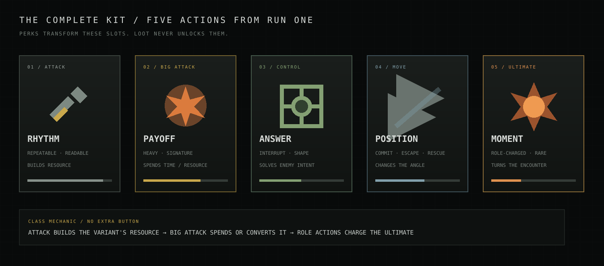
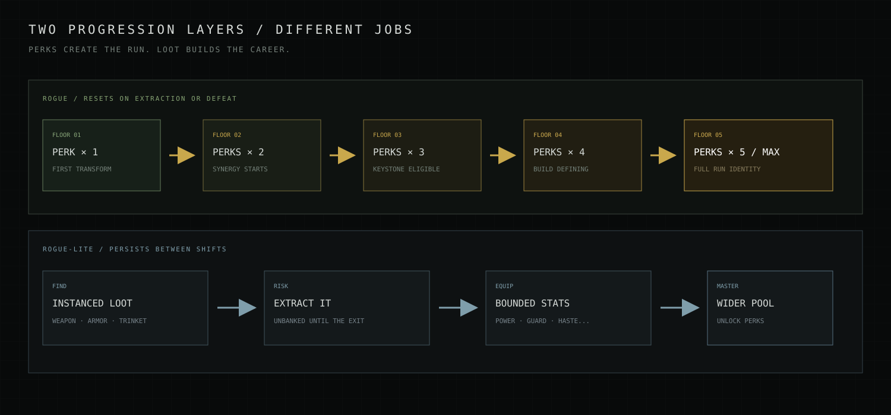

Establish rhythm
Repeatable action used while reading the room. Usually builds the class resource.
Target combat specification · Values are starting targets
Every class-variant arrives complete. The run does not hand out missing abilities—it bends the abilities you already know into a new tactical identity, one floor perk at a time.
Roster at a glance
01 / Kit law
Fighter, Rogue, Mage and Cleric provide the permanent fantasy identity. Each class offers two complete variants with a different combat interpretation. Selecting a variant chooses the five-action kit for the run; it is not a perk tree or partial loadout.

Repeatable action used while reading the room. Usually builds the class resource.
High-impact damage or healing. Spends resource, exposes timing or carries a meaningful cooldown.
Interrupt, taunt, root, cleanse, wall or trap. It changes what can happen next.
Commit, escape, rescue or traverse. Mobility always has a tactical destination.
Charged primarily through positive role actions and expected two or three times per floor.
02 / Rogue + rogue-lite
The two reward layers must never blur. A perk is an exciting temporary rule change. Loot is a persistent, extractable stat improvement. Mastery determines what perks may appear, not whether the class has a functional kit.

A safe shrine after the first guardian offers three choices. The chosen perk is usable during that floor's second half.
At least two choices target the current variant. The third may be a role or universal perk.
Perks improve, convert or replace a slot. They can add triggers, charges and interactions—not input clutter.
Extraction and defeat clear active perks. Mastery may add discovered perks to future offer pools.
Persistent loot slots
Loot is personal, remains unbanked until extraction and is equipped between shifts. It never changes which five actions the class owns.
03 / Fighter variants
Both variants deliver the armored martial fantasy. The Iron Vanguard protects space with shield discipline; the Bloodreaver turns pressure into violent momentum. One controls danger. The other becomes it.
Fighter variant · Protector
“Shield high. Blade ready. Nobody passes.”
A disciplined melee cut that builds Guard. Striking a challenged enemy generates additional threat.
Commit to a heavy two-handed blow that breaks one armor pip and staggers lesser enemies.
Call nearby enemies to face the Fighter for four seconds and reveal their intent lines.
Rush three tiles behind the shield, stunning the first enemy and pushing lesser bodies aside.
Brace for six seconds. The Fighter becomes immovable, blocks the doorway and grants nearby allies damage reduction.
Traditional build paths
Power Attack becomes a chosen maneuver: Trip, Disarm or Riposte.
Challenged enemies deal reduced damage to anyone other than the Fighter.
Critical strikes grant Guard and shorten Shield Rush.
Fighter variant · Aggressor
“The first wound is permission.”
A broad martial cut that builds Fury. Striking two enemies with one swing grants additional Fury.
Spend Fury on a devastating overhead blow. Wounded targets take greater damage and the impact cracks adjacent armor.
A concussive roar staggers nearby enemies and compels lesser foes to attack the Bloodreaver for four seconds.
Crash through three tiles, dragging the first enemy struck and slamming it into the final tile.
For seven seconds, Fury cannot fall below half, every swing cleaves fully and damage dealt restores health.
Traditional martial paths
A slower wind-up doubles armor break and sends a shockwave beyond the target.
Rampage lasts longer, but the Bloodreaver becomes exhausted when it ends.
Allies in the roar gain haste and heal when they strike a staggered enemy.
04 / Cleric variants
Both variants wield divine magic in battle. The Dawnbringer answers wounds after they happen with radiant healing; the Gravewarden prepares wards, controls spirits and prevents lethal moments before they happen.
Cleric variant · Restorer
“The dawn does not ask darkness for permission.”
Call radiant fire onto an enemy. Damage builds Faith and restores a sliver of health to the most wounded visible ally.
Hurl a brilliant lance that bursts on impact, damaging foes and releasing a strong allied healing pulse.
Consecrate a small area, cleansing allies and silencing undead, fiends and enemy casters inside it.
Flash to a visible ally within four tiles, granting both players a brief ward of radiant armor.
Call down a room-wide miracle: restore allies, cleanse one affliction and prevent lethal damage for one second.
Traditional domain paths
The healing pulse becomes larger and leaves Renew on wounded allies.
Every third cast erupts in a blinding radiant flare around the target.
Consecration arrives with thunder, pushing enemies out of the sacred area.
Cleric variant · Warder
“Death may knock. It enters by my leave.”
Sound a spectral bell inside one enemy. The toll bites harder against wounded prey and builds Vigil.
Release ancestral spirits around an ally. They tear at nearby enemies and reinforce every Soul Ward they pass through.
Consecrate a 3×3 area. Undead are turned, enemy magic is weakened and allies inside cannot be displaced.
Become incorporeal and glide to a visible ally, leaving a Soul Ward on both the origin and destination.
Seal the room against death for six seconds. Lethal damage instead creates a fragile spirit tether that allies can heal back into the body.
Traditional domain paths
Restored spirit tethers return with a burst of healing and temporary protection.
The consecrated area becomes dim sanctuary that refreshes nearby Soul Wards.
The toll chains to a second wounded enemy but generates less Vigil.
05 / Rogue & Mage variants
The Rogue kills through positioning: Nightblade at knife range, Deadeye across a clear lane. The Mage kills through spellcraft: Ashen Evoker detonates space, while Hexbinder deepens curses until one target collapses.
Rogue variant · Assassin
“Your tank chooses the face. You choose the back.”
A rapid melee pair. Flank or rear contact grants Cunning and coats the second blade in poison.
Spend up to three Cunning on a vicious strike. Rear hits break armor and execute weakened lesser enemies.
Interrupt with a pommel, sand or garrote. From behind, also blind and break one armor pip.
Vanish and reappear behind a distracted enemy within four tiles, immediately striking once.
Mark one target for death. For five seconds, all angles count as flanks and the Nightblade's first hit from stealth is devastating.
Traditional rogue paths
The first strike against a full-health marked target always critically hits.
May trigger in a frontal duel when no other enemy is adjacent.
Leaves an illusion that draws one enemy attack before vanishing.
Rogue variant · Archer
“You were dead when the lane opened.”
A clean ranged shot. Consecutive hits on the same target build Aim and sharpen the exposed precision point.
Loose an armor-piercing arrow whose damage scales with Aim and every unobstructed tile it travels.
Scatter hooked caltrops across a 3×3 area, slowing enemies and rooting the first one that dashes through.
Roll three tiles through danger, preserving Aim and instantly nocking an arrow at the current target.
Reveal a line through the entire room, then fire through every enemy and obstacle. Each precision point struck multiplies the final impact.
Traditional rogue paths
Gain a second charge and leave caltrops at the starting tile.
Traps arm instantly and refund a charge when they catch an elite.
The arrow bends once around cover toward a visible precision point.
Mage variant · Elementalist
“Give me two seconds and somewhere safe to stand.”
A fast evocation cantrip. Consecutive casts build Arcane Charges and leave the target primed for combustion.
Consume Arcane Charges in an iconic explosive projectile. Blast radius and armor damage scale with charges.
Conjure three frozen wall tiles that block enemies and hostile projectiles before shattering.
Teleport three tiles through units. The next spell retains Empowered Casting even if cast while moving.
Mark a 5×5 area. Four meteors fall in sequence, breaking armor and annihilating everything that fails to escape.
Traditional school paths
Allies become immune to its blast and burning ground.
The wall grants Arcane Ward to allies standing beside it.
Becomes Grave Bolt: lower direct damage, but slain targets rise briefly as skeletons.
Mage variant · Occultist
“Everything has a true name. I know the cruel ones.”
Hurl a bolt of raw pact magic. Repeated hits stack Hex and push lesser creatures backward.
Consume all Hex on the target in a violent implosion. At three stacks, tear free a Soul Shard.
Open a patch of supernatural darkness that slows, blinds and whispers fear into enemies inside.
Step through darkness to a tile within four spaces, leaving a grasping shadow on departure.
Tear open the patron's threshold. Tendrils drag enemies inward while eldritch bolts strike every hexed soul.
Traditional patron paths
Rupture ignites the target and grants temporary health when it kills.
Enemies reaching three Hex become briefly terrified of the Hexbinder.
Allied deaths during the Gate summon temporary wraiths instead of ending immediately.
06 / Balance constitution
Numbers will change during testing. These constraints should not. They keep the roster readable, perks exciting and persistent loot meaningful without turning teamwork into a gear check.
Role → variant → core mechanic → five ability slots → perk hooks. All values remain data-driven and testable.
Each ability emits standardized events: cast, hit, crit, interrupt, move, zone enter and ultimate charge.
Cooldowns, targets, damage, healing, perk offers and loot extraction are authoritative in multiplayer.
Prediction makes actions feel immediate; intent, hit confirmation and role credit remain visually explicit.
Definition of a successful class
A new player can describe its job after one room, an expert can express that job differently every run, and no amount of loot lets it ignore the other two roles.